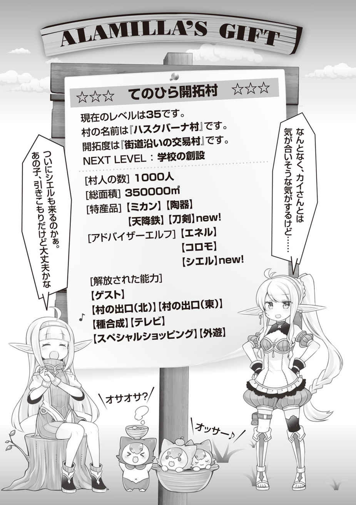

エピローグ
新しく加わった島民は三人と一匹。カエデの両親と飼っていた大型犬。
さらに、なぜかドサクサ紛れにファウゼルも島で暮らすことになった。
彼らのために慌ただしく新しい家を作り、それが終わるころには、すぐ冬がやってきた。
この年の冬は、例年よりもさらに寒く、俺が来てから初めての雪が降った。
戦士君たちは生まれて初めての雪にはしゃぎまわり、俺自身も久しぶりに子どものように雪合戦やかまくら作りをして遊んで、息を抜くことができた。
そして、春。
遥か彼方、遠く東の海から神殿の船が島に来た。
俺やカエデの時と同じように南の入り江に船を着ける。
俺たちは何があっても対処できるように準備を整えた上で、森の繁みの中から固唾を飲んで見守っていた。
船から梯子が降ろされ、全身黒ずくめの審問官が船から引っ張り出すようにして連れ出したのは、洗礼服を着た子ども……ではなく、目隠しをされ猿ぐつわを嵌められた神官服の女性だった。
審問官は、カエデの時と同じように、一言二言耳元で何かを呟くと、そのままその女性だけを砂浜に残し、船に戻っていった。
それが合図だったかのように、船はすぐさま動き出し、遥か東の海へと消えていく。
後には、神官服の女性一人だけが残された。
──今年、捨てられたのは子どもではなかった。とっくに成人している大人の女性だ。
俺は、神殿の船が水平線の彼方に消え、完全に見えなくなってから繁みを出た。
茫然自失としている女性の猿ぐつわを外してやると、女性は青い顔のままこう呟いた。
「……ここは魔女を封印した、人の住めぬ禁忌の島ではないの？ あなたは……誰？」
